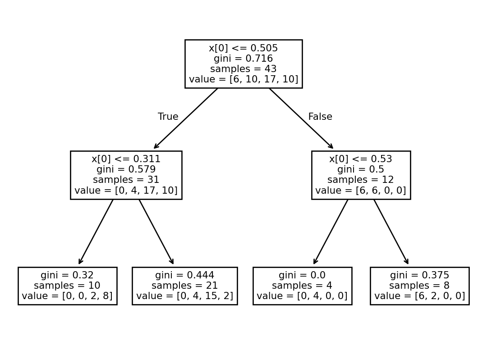

STEP 7: Fit a model
One way to determine if redlining is related to NDVI is to see if we can correctly predict the redlining grade from the mean NDVI value. With 4 categories, we’d expect to be right only about 25% of the time if we guessed the redlining grade at random. Any accuracy greater than 25% indicates that there is a relationship between vegetation health and redlining.
To start out, we’ll fit a Decision Tree Classifier to the data. A decision tree is good at splitting data up into squares by setting thresholds. That makes sense for us here, because we’re looking for thresholds in the mean NDVI that indicate a particular redlining grade.
The cell below imports some functions and classes from the scikit-learn package to help you fit and evaluate a decision tree model on your data. You may need some additional packages later one. Make sure to import them here.
from sklearn.tree import DecisionTreeClassifier, plot_tree
from sklearn.model_selection import train_test_split, cross_val_scoreSee our solution!
import hvplot.pandas
import matplotlib.pyplot as plt
from sklearn.tree import DecisionTreeClassifier, plot_tree
from sklearn.model_selection import train_test_split, cross_val_scoreAs with all models, it is possible to overfit our Decision Tree Classifier by splitting the data into too many disconnected rectangles. We could theoretically get 100% accuracy this way, but drawing a rectangle for each individual data point. There are many ways to try to avoid overfitting. In this case, we can limit the depth of the decision tree to 2. This means we’ll be drawing 4 rectangles, the same as the number of categories we have.
Alternative methods of limiting overfitting include:
- Splitting the data into test and train groups – the overfitted model is unlikely to fit data it hasn’t seen. In this case, we have relatively little data compared to the number of categories, and so it is hard to evaluate a test/train split.
- Pruning the decision tree to maximize accuracy while minimizing complexity.
scikit-learnwill do this for you automatically. You can also fit the model at a variety of depths, and look for diminishing accuracy returns.
Replace predictor_variables and observed_values with the values you want to use in your model.
# Convert categories to numbers
denver_ndvi_gdf['grade_codes'] = denver_ndvi_gdf.grade.cat.codes
# Fit model
tree_classifier = DecisionTreeClassifier(max_depth=2).fit(
predictor_variables,
observed_values,
)
# Visualize tree
plot_tree(tree_classifier)
plt.show()See our solution!
denver_ndvi_gdf['grade_codes'] = denver_ndvi_gdf.grade.cat.codes
tree_classifier = DecisionTreeClassifier(max_depth=2).fit(
denver_ndvi_gdf[['mean']],
denver_ndvi_gdf.grade_codes,
)
plot_tree(tree_classifier)
plt.show()
Create a plot of the results by:
- Predict grades for each region using the
.predict()method of yourDecisionTreeClassifier. - Subtract the actual grades from the predicted grades
- Plot the calculated prediction errors as a chloropleth.
See our solution!
denver_ndvi_gdf['predict'] = tree_classifier.predict(
denver_ndvi_gdf[['mean']],
)
denver_ndvi_gdf['error'] = (
denver_ndvi_gdf['predict']
- denver_ndvi_gdf['grade_codes']
)
denver_ndvi_gdf.hvplot(
c='error', cmap='coolwarm',
geo=True, tiles='CartoLight',
)One method of evaluating your model’s accuracy is by cross-validation. This involves selecting some of your data at random, fitting the model, and then testing the model on a different group. Cross-validation gives you a range of potential accuracies using a subset of your data. It also has a couple of advantages, including:
- It’s good at identifying overfitting, because it tests on a different set of data than it trains on.
- You can use cross-validation on any model, unlike statistics like \(p\)-values and \(R^2\) that you may have used in the past.
A disadvantage of cross-validation is that with smaller datasets like this one, it is easy to end up with splits that are too small to be meaningful, or don’t have all the categories.
Remember – anything above 25% is better than random!
Use cross-validation with the cross_val_score to evaluate your model. Start out with the 'balanced_accuracy' scoring method, and 4 cross-validation groups.
# Evaluate the model with cross-validationSee our solution!
cross_val_score(
tree_classifier,
denver_ndvi_gdf[['mean']],
denver_ndvi_gdf.grade_codes,
cv=4,
scoring='balanced_accuracy',
)array([0.5 , 0.6875 , 0.91666667, 0.5 ])Try out some other models and/or hyperparameters (e.g. changing the max_depth). What do you notice?
# Try another modelPractice writing about your model. In a few sentences, explain your methods, including some advantages and disadvantages of the choice. Then, report back on your results. Does your model indicate that vegetation health in a neighborhood is related to its redlining grade?